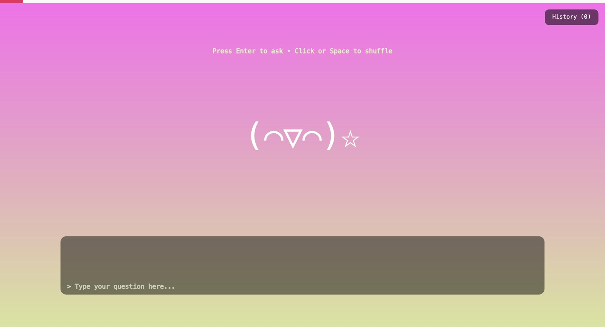
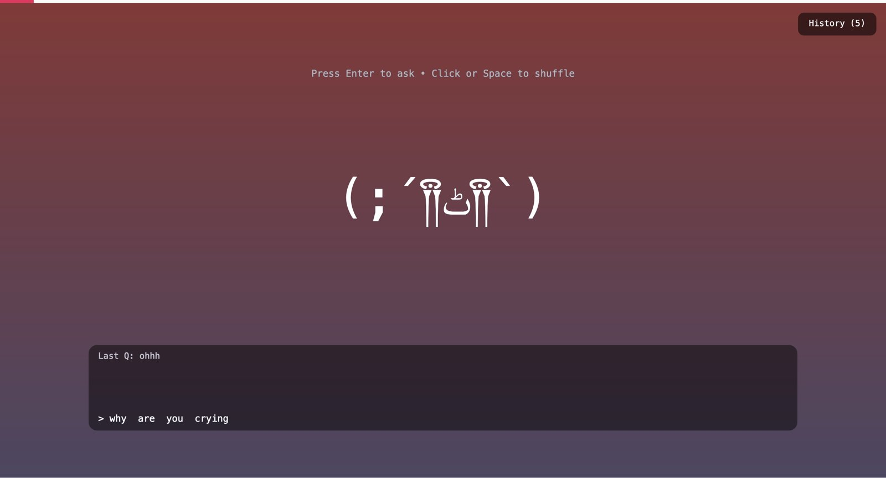
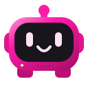
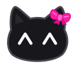
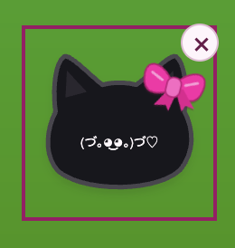

Overview
A chatbot that could only answer in kaomoji, turned into a browser cat that finds the right one for you.
It started as a school p5.js experiment: ask anything, get a text face back. It was expressive but had no real job. I developed it into Kaomoji Cat, a Chrome extension where you describe a mood or gesture and copy a matching expression into whatever you are writing.
Interaction design, visual direction, product decisions and prototyping, with AI-assisted coding.
ContextSelf-directed continuation of a school project, shaped by classroom feedback, short interviews and friend testing.
Toolsp5.js, HTML, CSS, JavaScript, Chrome Manifest V3.
StatusWorking, locally installable prototype, tried by friends in a first round of feedback.
The Starting Point
A chatbot that answered in faces.
In the original p5.js piece, you type a message and get a kaomoji back while the background shifts color. The replies were ambiguous on purpose: sometimes affectionate, sometimes confused, sometimes oddly right. Classmates started reading it as a little AI character, which raised the real question: what would make someone come back after the novelty wears off?




Original p5.js experiment: ask, shuffle, history
ForkTwo directions from feedback
Give the pet its own screen or a robot-like object.
Keep the companion feeling, but make every interaction end in something useful.
The Job
One small moment in everyday messaging.
You know the tone you want, but you don't have the right kaomoji ready to paste. Searching another site or scrolling a long list breaks the moment. My hypothesis was that a companion living in the browser could make that choice more direct. The intended users are people who already enjoy text expressions and write in browser-based tools.
When I know the feeling, help me find a kaomoji I can paste.
★Pain Points
What people said when I asked how they find kaomoji today.
Too few, too hard to find"My keyboard has very few kaomoji, they're hard to find, and the suggested ones are ugly."
Too slow to type"Even with a Japanese keyboard they're hard to type. Building one myself takes too long."
Websites get in the way"Every time I look for new ones on a website, I tap an ad by accident or get asked to sign up for an account."
These shaped three rules for the build: a large, good-looking library; copy in one click instead of typing; and no ads, accounts or extra tabs.
The Flow
Ask, pick, copy, paste.
Click the small cat floating on the page.
Type a mood or gesture, like shy or need a hug.
Pick from up to three matching kaomoji.
Click to copy, then paste into your message.
The cat never reads your conversations or guesses your mood from the page. You choose what to tell it, which keeps the interaction understandable and easy to evaluate.
Instead of a small hand-coded pool, it uses an open kaomoji dataset: 1,708 expressions after deduplication, with search aliases, categories, favorites and recent copies. That number describes scope, not accuracy; accuracy needs testing.
Iterations
From design review and daily use during the build.
01First browser pet
The first Chrome version moved the character into the browser as a draggable pet with a chat panel. It set up the interaction, but replies were still random: it could respond, but it couldn't give you the expression you asked for.
Early version: draggable pet, random replies
02Bring the pet back to the front
One redesign opened a large expression library as the main interface. Search was easy, but the companion became secondary and the whole thing turned into a browsing panel. I reset the hierarchy so the cat leads and the library sits one level down.
A small floating cat.
A compact conversation.
Full searchable library, favorites, recent copies.
Tradeoff: the library is now one step deeper, behind Settings. Testing later confirmed this was a weak spot (see Feedback).
03A character that works small
The physical-pet feedback led me to a rounded pink robot screen first, but the framed screen read as a tiny device. A soft glowing pink form felt friendlier but too abstract to recognize. I chose a graphic black cat with a pink bow: a clear silhouette, and the bow ties it to my personal visual identity.

Read as a miniature device, not a companion.
Friendly, but no silhouette to remember.

Strong silhouette, pink bow as the accent.
The cat now carries across the floating pet, toolbar icon, launcher and chat greeting. The toolbar icon is far smaller than the pet, so eye strokes, bow size and margins have to hold up at that scale.
04Keep the face consistent

Each reply replaced the cat's face. Long kaomoji shrank into small text on a dark silhouette and the character lost its face.
The cat keeps ^ ^ through hover, chat and copy. Suggestions live in the conversation, and copying shows its own confirmation.
05Chrome's different surfaces

Clipped popup. An early toolbar popup collapsed into a narrow strip, as seen here.
New Tab error. Clicking the extension on Chrome's New Tab page could show an error badge, because that page can't host the floating pet.
Fix. On New Tab and other protected pages, the toolbar now opens a small cat launcher with the same chat and copy flow. Explicit sizes for the launcher, chat and Settings let me check real popup behavior, not just a preview in a normal tab.
The Prototype
What works today.
Current prototype walkthrough
Mood and gesture requests, copyable suggestions, an offline searchable library, favorites and recent history. It runs as a floating pet on ordinary sites and through the toolbar on Chrome New Tab. Build checks in an isolated Chrome profile covered popup sizing, keyword replies, exact clipboard contents, saved favorites, offline use, and the cat's face staying unchanged.
Where AI Fits
In the build, not in the product.
In the process
- AI helped turn design decisions into runnable code and supported debugging.
- I defined the experience, judged the results and rejected directions that didn't fit.
In the product
- No model calls. Matching uses local keywords, categories and aliases.
- Why: works offline, input never leaves the browser, no per-request cost.
- Limits: no reliable handling of negation, sarcasm or nuance like "affectionate but not too much".
A future version could let a model translate a nuanced request into tags and pick from the curated library. I'd test that against the local baseline before adding the complexity.
Feedback
What friends said after trying it.
The core job works"So convenient, it really works. I don't have to type 'cute kaomoji' into a search box every time anymore."
The character lands"Such a cute mascot, and it even blinks!"
Settings is the wrong door"Could the settings icon be a (💗) or a favorites button? I don't usually click settings."
Make it mine"Can I personalize the mascot, or change its bow?!"
Beyond the browser"I want a full-screen version! Or a phone version."
NextWhat I'll change
Replace the Settings entry with a heart, so saved kaomoji and the library are where people expect them.
Let people pick a bow color or accessory, keeping the ^ ^ face fixed.
Explore a full-screen view for browsing and a phone keyboard version.
Reflection
Keep the charm, add a purpose.
The hardest calls were about what stays small, what moves to a second view, and what never changes. The first round of feedback confirmed the core job and pointed straight at the weak spot I had flagged: the library hidden behind Settings. The next version starts there.
Kaomoji data from kaomojikan/kaomoji-data, MIT license; categories and tags kept, duplicates merged. Implementation built with AI coding assistance. Classroom feedback shaped the direction.